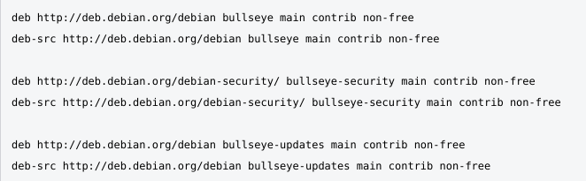

- L'identifiant utilisateur.
- Le mot de passe utilisateur.
- Valider avec Entrée.
2 - Configurer les sources de Apt.
Changer le fichier sources.list, qui se trouve dans : /etc/apt/sources.list
- Pour ouvrir le terminal aller dans : Applications - Emulateur de terminal.
- Pour se connecter en mode Root taper : su - (valider avec Entrée).
- Taper le mot de passe du mode Root, rien ne va apparaître à l'écran, valider avec Entrée.
- Si le caractère # s'affiche, alors mode Root
- Taper : nano /etc/apt/sources.list (valider avec Entrée).
- Remplacer l'ensemble par le fichier sources.list ci-dessous :
- Enregistrer avec les touches du clavier : Ctrl et la lettre o (valider avec Entrée)
- Sortir avec les touches du clavier : Ctrl et la lettre x
- Retourner dans nano /etc/apt/sources.list, les modifications ont été enregistrées.
- Sortir avec les touches du clavier : Ctrl et la lettre x
- Sortir du mode Root taper : exit (valider avec Entrée)
- Sortir du mode simple utilisateur taper : exit (valider avec Entrée)
Fichier sources.list wiki.debian
Remplacer http parhttps :// ... dans toutes les lignes ci-dessus pour utiliser les dépots sur des connexions HTTPS chiffrées.
Nota : Besoin de paquets non-free pour utiliser le wifi et le bluetooth.
3 - Mise à jour en utilisant le Gestionnaire de paquets Synaptic.
- Mise à jour : debian-facile PDF page 183 à 193, chapitre 8-5-1
- Aller dans : Applications - Système - Gestionnaire de paquets Synaptic
- Une fenêtre apparait, Taper le mot de passe Root
- Valider avec Entrée
- Cliquer en haut à gauche sur : Recharger et attendre la fin du chargement.
- Cliquer en haut à gauche sur : Tout mettre à niveau
- Une fenêtre apparaît avec la liste des paquets qui vont être mis à jour et les dépendances additionnelles si nécessaires.
- Ciquer dans la fenêtre : Ajouter à la selection.
- a) En haut à gauche "Appliquer" doit être en noir et non grisé. Cliquer sur Appliquer.
b) Si "Appliquer" est grisé, ne rien faire le système est à jour. Passer à l'étape 12. - Une fenêtre apparaît avec la liste des paquets
- Cliquer dans la fenêtre : Appliquer.
- Un message informe que les modifications ont été appliquées, Fermer la fenêtre
- Fermer l'application Synaptic : fichier - Quitter
4 - Ajouter des paquets en utilisant le Gestionnaire de paquets Synaptic.
- Ajout de paquets : debian-facile PDF page 188 à 193, chapitre 8-5-4
- Aller dans : Applications - Système - Gestionnaire de paquets Synaptic
- Une fenêtre apparait, Taper le mot de passe du mode Root
- Valider avec Entrée
- Cliquer en haut à droite sur : Rechercher
- Une fenêtre apparaît indiquer le paquet à installer exemple : mousepad cliquer Rechercher
- Le paquet "mousepad" apparait, cliquer sur le carré à côté de "mousepad"
- Ciquer dans la fenêtre : Selectionner pour installation
- Si, Une fenêtre apparaît avec la liste des paquets
- Alors, cliquer dans la fenêtre : Ajouter la liste à la selection
- En haut à gauche "Appliquer" doit être en noir, cliquer sur Appliquer
- Un message informe que les modifications ont été appliquées, Fermer la fenêtre
Le carré a coté de "mousepad" doit être vert. - Fermer l'application Synaptic : fichier - Quitter
 Retour
Accueil
Suivant
Retour
Accueil
Suivant